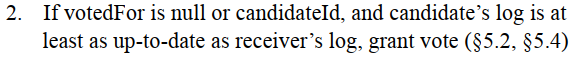
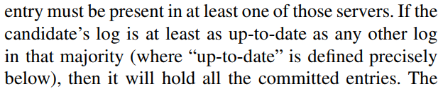

Raft的一致性复制过程
- 客户端向leader发送请求
- leader向自己的日志增加一条新entry，然后向所有的follower并行发送AppendEntries RPC来复制这条新entry。AppendEntries RPC可以一次性发送多条entry。
- follower通过AppendEntries RPC中的prevLogIndex和prevLogTerm查找本地是否拥有这条entry的前一条entry，如果有，则删除其后所有冲突的entry，然后添加新entry，向leader发送success响应
- 当leader接收到来自过半数follower的success响应时，则将这条entry标记为commited，并在随后发送的AppendEntries RPC中将最新的leaderCommit发送给所有follower
- follower将自己的commitIndex更新为leaderCommit和本地最新index的最小值
- 所有服务器（包括leader、candidate和follower）定期将本地commitIndex对应的entry应用（apply）到本地状态机上
- leader将entry应用到本地状态机后，响应客户端
当一个leader崩溃时，candidate当选leader的条件
- candidate的日志至少要比过半数的followr更up-to-date，才可以获得过半数投票当选leader：
- 
- 原因如下：当candidate满足这个条件是，它会包含所有已提交的entry：
- 
- up-to-date的比较规则：先比较term，term相同再比较index
在一致性复制的不同阶段leader崩溃时，Raft分别如何处理？
数据到达leader，但未复制到大多数follower
- 这条entry还没有被提交，剩余的节点会选出一个包含所有已提交日志的leader
- 当leader包含这条未提交的entry时，会对其进行间接提交
- 如果客户端还在原有的崩溃节点等待，当崩溃节点恢复时，会接收到新leader提交的这条entry，并应用到状态机，从而响应客户端
- 如果客户端向新的leader再次发送了这条请求，由于请求中含有客户端指定的唯一ID，尽管Raft提交了两条重复的请求，但只会向状态机应用一次
- 由于这条指令被间接提交后会被应用到每个可用节点的server层，因此客户端必须重试。如果客户端不重试，则会有一条错误的指令被执行。也就是说，一旦用户在客户端发送了一条请求，则这条请求不能够被撤回。
- 简而言之，此时的一致性由客户端指定的唯一操作ID保证
数据到达leader，成功复制到大多数follower，但leader未接收到过半数的响应
- 同上
数据到达leader，成功接收到了过半数的follower响应，但未更新commitIndex
- 只要未apply，就不会响应客户端。由于commitIndex未更新，因此视为没有commit，同上
数据到达leader，成功复制并且更新了commitIndex，但未在本地apply且未将commitIndex发送给大多数follower
- 新leader没有更新commitIndex，视为未commit。本机未apply，未响应客户端。因此不会有问题，同上
数据到达leader，成功复制并且更新了commitIndex，已在本地apply，但未将commitIndex发送给大多数follower
- 新leader没有更新commitIndex，视为未commit，但新leader的日志中包含这条entry，会对其间接提交。
- 原本发送请求的客户端接收了正确的响应。间接提交后所有节点的server层也能够正确执行这条指令。
数据到达leader，成功复制并且更新了commitIndex，未在本地apply，但已将commitIndex发送给大多数follower
- 新leader会apply这条指令。当客户端在新leader重试时，通过操作ID可以发现这条指令已经被执行了，直接返回success。如果客户端还在原leader等待，当原leader重启时也会apply这条指令并响应客户端
网络分区问题
- 假设小分区和大分区均存在leader，均可以接收客户端请求。小分区当中的entry，由于无法append到大多数，因此永远不会被commit；大分区当中的所有entry会被commit和apply。相应地，大分区的客户端请求可以被正确执行，而小分区的客户端请求会一直超时重试。
- 当小分区与大分区合并时，term更高的那个leader会成为整个集群的leader，其日志被复制到整个集群。
- 大分区的leader一定是term更高的，因为网络分区后，小分区中的票数不足，无法选举产生term更大的leader。所以新leader一定是大分区的leader，不会出现大分区的日志被小分区覆盖，导致已执行的客户端请求丢失的情况。
- 当分区合并后，小分区的leader变为follower，那些一直在超时重试的请求会返回失败。
CAP理论
- 在多节点系统当中，CAP三个性质只能同时满足两个
- Consistence一致性：数据在多个副本之间保持一致的特性
- Availability可用性：服务一直可用（但是不保证获取的数据为最新数据）
- Network Partitioning分区容错性：网络分区故障时仍然能对外提供满足一致性和可用性的服务，除非整个网络都发生了故障
- raft的网络分区满足了AP特性：当网络分区时，如果要保证服务可用性，则副本之间有可能存在不一致。反之，如果对于副本的一致性有要求，例如金融系统，在网络分区情况下服务是不可用的，必须等到网络分区恢复。
Raft与一致性
- 有一种说法是，raft与一致性无关，raft只实现了共识，一致性针对的是服务，取决于上层应用。然而我认为一致性是服务和raft共同保证的。我的6.824 KV数据库的强一致性由服务层的唯一操作ID和raft层对读操作的共识共同实现。
- 如果只考虑raft，那么raft也必须为强一致性提供保证，即避免脏读。一种方法是我的读操作共识方法，另一种方法见下一小节。
一致性类型
最终一致性：写入过程中，客户端可能读到旧值，也可能读到新值
线性一致性（强一致）：当其中一个客户端读到了新的数据，所有的客户端都立即能够获取新数据
我的raft实现对于读请求必须达成共识，因此实现了强一致性。因为读请求之前的写请求对应的entry都被commit了，杜绝了“在写的过程中读”这回事
如果不想为读操作添加entry，应该怎么避免脏读
我的KV数据库实现为所有的读操作添加entry，等到该entry达成共识时才响应客户端，会带来较高的延迟
如果不为读操作添加entry，在不引入其他额外措施的情况下会发生脏读（论文第8节最后一段）：客户端读到了旧leader的值，而这个值已经被新leader修改了，但是由于网络分区等原因，旧leader还没有意识到他已经不是leader了。
为了防止脏读，需要引入下列两个措施：
leader必须拥有之前所有被提交的日志，leader完整性可以保证leader最终会拥有所有已提交的日志，但在任期刚开始时可能还没拥有。此时需要发送一个no-op的空entry，以强制提交leader拥有的之前任期未被提交的日志
leader在响应读请求之前必须确保它仍然是leader，可以通过发送心跳，接收大多数节点的响应来检查
为什么需要提交no-op
- 如果leader在其任期开始时拥有之前任期的未被提交的日志，那么这条日志最终会被提交，然而leader在此时向客户端返回的是这条日志未提交的状态，产生了脏读
- 提交no-op可以强制提交这条日志，使leader更新到最新的状态
- 在我的6.824 KV数据库实现当中，由于采用了读共识，因此不需要提交no-op
为什么leader不能直接提交之前任期的entry
- 论文中的Figure 8进行了解释：

- 简而言之，leader只能在提交本任期日志的过程中，通过日志匹配规则“间接提交”之前任期的日志。如果直接提交之前任期的日志，则这条日志有可能被覆盖。
- 图中方框中的数字表示日志的任期，带黑框框的节点为leader。并且需要注意每个leader的任期：(c)中的S1为term=4，(d)中的S5为term=5
- 如果允许leader直接提交之前任期的entry，则第一步：(c)中S1向大多数节点复制并提交了term=2的日志，然后崩溃了。第二步：(d)中S5的日志比大多数节点都要up-to-date，被成功选为leader，然后用自己的蓝色日志覆盖了黄色日志。
- 如果不允许直接提交，则第一步：(c)提交了term=4的红色日志，并且间接提交了term=2的黄色日志，变为(e)。此时，S5的日志没有比大多数节点up-to-date，无法被选为leader。
其他问题
为什么follower需要随机超时
- 为了防止多个follower同时变为candidate，造成split vote